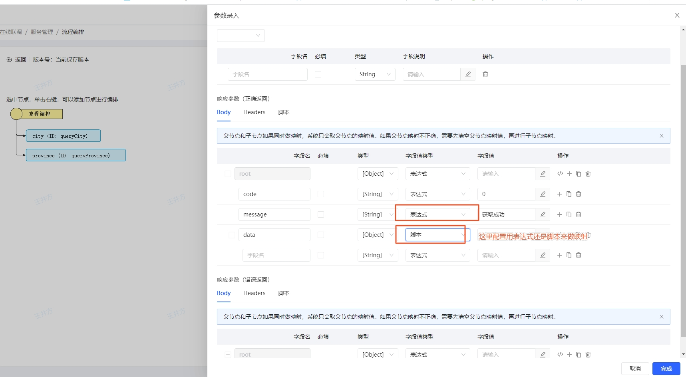

数据映射
数据映射是流程编排里最重要的组成部分，数据映射可以用来：
- 将入参映射到不同的接口里
- 将接口数据收集到一起
举例说明： 可以通过${workflow.input.params.id}引用流程入参query里的id属性。
数据映射分为表达式映射以及mvel脚本,如下图所示，在参数映射里选择具体的映射信息。

表达式为json path表达式或者常量，被${}包裹的是json path表达式，其他的是常量 ，json path表达式可以拼接，比如:${workflow.input.params.id}_${workflow.input.params.name}.表示将id、name用_拼接到一起。
脚本为mvel脚本,不需要任何符号包裹，比如可以通过 workflow.input.params.id 引用到query参数的id，mvel脚本和表达式的具体规则参考下面的说明
映射规则
根据基础概念里的说明，你应该已经知道了流程分为入参、任务列表、出参
因此，我们根据这些概念抽象出2个变量，分别为workflow、steps，他们分别对应流程定义和任务列表，他们的结构如下：
workflow
- input
- params ： query参数信息，map类型
- body ： 请求体信息，json类型的请求体会自动解析，因此可以通过workflow.input.body.data.xxx.xxx 去继续获取body里的信息,任意类型
- headers ：请求头信息,map类型
- attrs ： 用来临时存储局部变量，mvel脚本加工的数据可以通过workflow.input.attr("xx",xx) 临时存储，通过workflow.input.attrs.xx取值， map类型
output
- headers ： 响应头信息，可以通过workflow.output.headers.xxx引用具体的属性 ， map类型
- body ：响应体信息，json类型的也会自动被解析,任意类型
exception
- message ： 执行出异常后的描述信息 ,string类型
- stepId ： 发送错误的步骤id ,string类型
- params: 异常具体的参数 ， map类型
steps
steps为任务列表，一个任务执行完成了，就可以引用该步骤的入参和出参信息，分别通过input和 output来引用,他们的在不同任务下略有不同，但一般来说，input和output都有body信息，对应请求体。
http步骤
http步骤有入参和出参信息
- input
- params ： query参数信息 ， map类型
- body ： 请求体信息，json类型的请求体会自动解析，因此可以通过workflow.input.body.data.xxx.xxx 去继续获取body里的信息 ,任意类型
- headers： 请求头信息 ， map类型
- url ： 请求url信息，不含域名信息,string类型
- attrs ：入参里用来存储加工的数据，通过steps.xx.input.attr(xx,xx)设值，通过steps.xx.input.attrs.xxx取值， map类型
- output
- headers： 响应头信息 ， map类型
- body ：响应体信息,任意类型
- attrs ： 响应里用来临时存储数据的地方，通过steps.xx.output.attr(xx,xx)设值，通过steps.xx.input.attrs.xx取值 ， map类型
- status： http响应status，int类型
webservice步骤
- input
- body ：soap xml请求体 ,任意类型
- attrs ， map类型
- output
- headers： webservice soap xml的Header属性,被转换为json了 ， map类型
- body ： webservice soap xml的Body属性，被转换为json了,任意类型
- attrs 临时存储数据的变量 ， map类型
- status ：http响应status，int类型
转换步骤
转换步骤只有出参output
- output
- headers 目前为空
- body 收集到的请求体信息 ,任意类型
- attrs 临时存储加工数据的地方，通过steps.xx.output.attr(xx,xx)设值，通过通过steps.xx.output.attrs.xx取值 ， map类型
参数预处理及脚本加工
参数预处理用来校验数据以及加工入参。上下文存在input变量，比如在http步骤，可这样写：
if(workflow.input.params.price < 0){
input.error("校验失败");// 会抛出异常，并终止当前执行流程
}
input.attr("price",workflow.input.params.price);
脚本映射
入参、出参映射支持脚本，在入参脚本里有input变量，出参脚本里有output变量。出参脚本只有在响应正常的情况下才能被执行。 input结构和上面描述的结构一致，因此，在http入参映射里你可以这样写
input.params={
"a":workflow.input.params.id
};
input.body=[{
"a":workflow.input.params.id
}];
input.headers={
"a":workflow.input.params.id
};
input.url = "/province/123";
webservice步骤也类似
出参也类似，比如针对转换步骤，可以这样写：
output.body = {
"token":steps.http.output.body.token
};